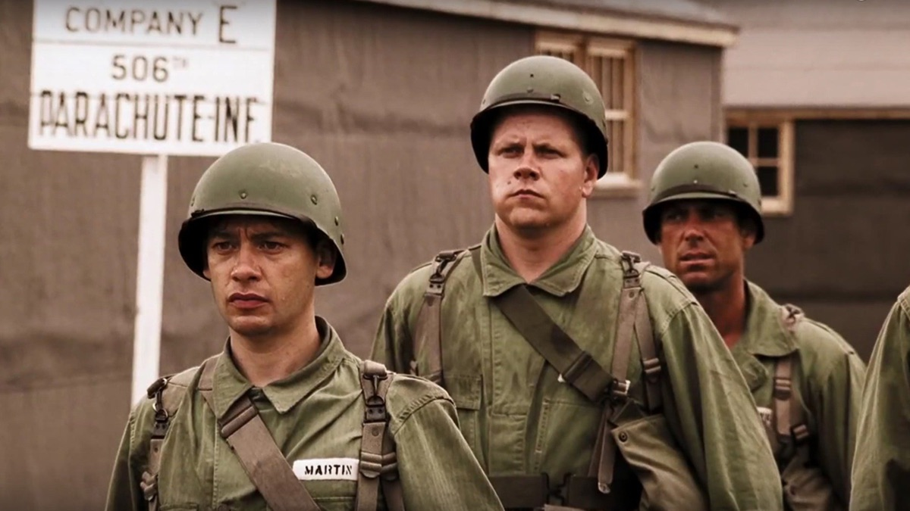

STORY FIELDNOTES / 影视阅读档案
走进故事，
看清人物与选择。
用画面记住情节，用关系图理解人物，把台词放回它发生的场景。
一部剧、一部电影，一份可以反复翻阅的图文档案。
已收录的故事
01 部作品 · 10 篇图解
CURRAHEE美剧 / 完整十集
兄弟连BAND OF BROTHERS
从训练场，到战争尽头。
十个不同的观察视角，串起人物、选择与战争留下的重量。
剧情时间线人物关系领导力分析台词笔记
打开十集目录 →
目录按观看进度显示配图与导读
关于这些笔记 剧情事实和个人解读分别标注。每篇限定剧透范围，图像和文字的参考来源列在篇末。